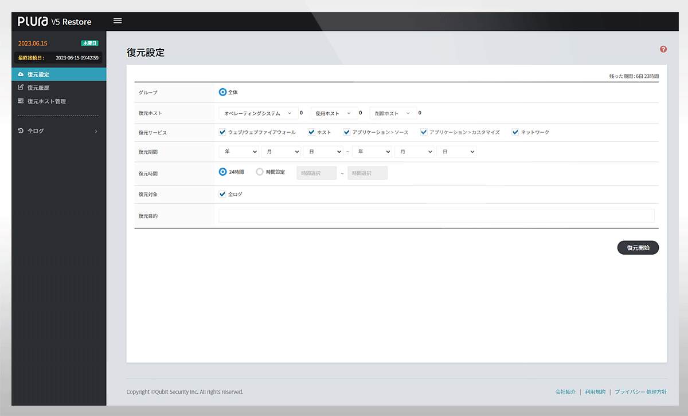
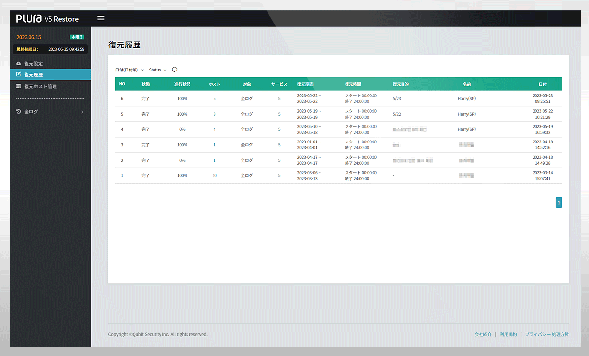

PLATFORM ♡
ログデータ・バックアップ
データバックアップ（Backup）
ログ管理の核心は、
監査ポリシー
を活用して過去ログを保管し、必要時に復元できるようにすることです。
監査ポリシーが無ければ、ログに意味のあるデータは残りません。
PLURAは監査ポリシーに基づきログを生成・分析して異常兆候を検知します。
監査ポリシーが含まれるすべてのログは、アップロード直後に長期保存され、
Hot & Cold Backup
の二重体制で管理されます。


ISMS 対応サービス：次の項目を支援
保護対策要件
2.9.4 ログおよびアクセス記録の管理
データ保存・保管
ホットバックアップ（Hot Backup）
1〜3か月を選択可能／リアルタイム検索に対応
コールドバックアップ（Cold Backup）
1〜12か月を選択可能／ホットバックアップに対する装置保管
検索は非対応
特長
ゼロトラスト・アーキテクチャ（ZTA）をサポート
「サーバ、アプリケーション、情報セキュリティ、ネットワークシステム等に対し、 情報システムのユーザーアクセス記録、システムログ、 権限付与履歴等のログ種別、保存期間、 保存方法等を定め、改ざん・盗難・紛失が起きないように 安全に保存・管理しなければならない。」
分析対象
Windows PC：イベントログ・Sysmon
Windows サーバ：イベントログ・Sysmon
Linux／Unix：Audit・Syslog
Web ヘッダー＋本文ログ
アプリケーションログ
ネットワーク機器の syslog ログ
情報セキュリティ機器の syslog ログ
ページトップへ